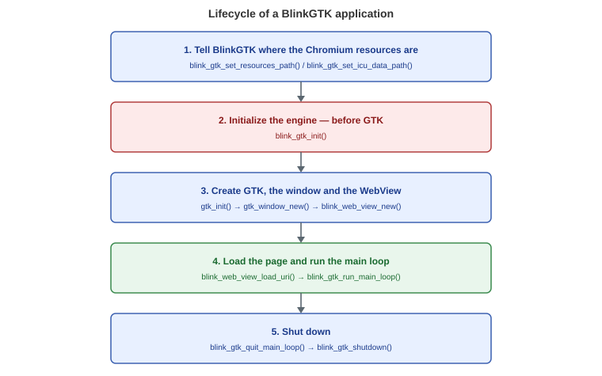

A minimal guide to building an application that embeds BlinkGTK.
BlinkGTK embeds Chromium, so building it requires a Chromium source
tree (over 100 GB) and
anywhere from several to well over ten hours of build time. Use
the distributed packages.
This page describes how to build your application against those
packages.
The distribution is split into three packages:
| Package | Purpose |
|---|---|
| runtime | The shared library and the Chromium runtime. Needed to run |
| devel | Headers and the .pc file. Needed to
build |
| gir | GObject Introspection typelib. Needed to use BlinkGTK from Python or GJS |
# Fedora
sudo dnf install ./blinkgtk-bin-1.2.0-build2.fc44.x86_64.rpm \
./blinkgtk-bin-devel-1.2.0-build2.fc44.x86_64.rpm
# Debian / Ubuntu
sudo dpkg -i ./libblinkgtk-0.1-0_1.2.0-build2_amd64.deb \
./libblinkgtk-0.1-dev_1.2.0-build2_amd64.debIf you use the tarball, extract it anywhere and tell
pkg-config where it is:
tar xzf blinkgtk-1.2.0-build2-linux-x86_64.tar.gz -C /opt/blinkgtk
export PKG_CONFIG_PATH=/opt/blinkgtk/usr/lib64/pkgconfig:$PKG_CONFIG_PATHThis is the easiest thing to get wrong, and it produces the most confusing failure.
cc -o myapp myapp.c $(pkg-config --cflags --libs blinkgtk-0.1)Do not hand-write -lblinkgtk on its own. BlinkGTK
requires Chromium's
PartitionAlloc allocator shim, and that shim must be a
direct dependency
(DT_NEEDED) of the executable so that it is loaded early.
The Libs line of
blinkgtk-0.1.pc already includes it.
If the shim is missing, the program builds, links, and starts — but
page loads never
complete (navigation does not commit, and the window stays
blank). The cause is hard to
spot from the symptom alone.
To check:
readelf -d ./myapp | grep allocator_shim
# One or more lines: good. Nothing: you are not going through pkg-configblink_gtk.h#include <blink_gtk/blink_gtk.h>
#include <gtk/gtk.h>The public API is collected in this one header. Do not include
internal headers directly;
they change between versions.

The call order matters. In particular, call
blink_gtk_init() before GTK.
#include <blink_gtk/blink_gtk.h>
#include <gtk/gtk.h>
static void on_activate(GtkApplication *app, gpointer user_data) {
GtkWidget *win = gtk_application_window_new(app);
gtk_window_set_default_size(GTK_WINDOW(win), 1024, 768);
GtkWidget *view = blink_web_view_new();
gtk_window_set_child(GTK_WINDOW(win), view);
gtk_widget_set_visible(win, TRUE);
blink_web_view_load_uri(BLINK_WEB_VIEW(view), "https://example.com/");
}
int main(int argc, char **argv) {
blink_gtk_init(&argc, &argv);
GtkApplication *app = gtk_application_new("com.example.MyApp",
G_APPLICATION_DEFAULT_FLAGS);
g_signal_connect(app, "activate", G_CALLBACK(on_activate), NULL);
/* BlinkGTK needs Chromium's browser main loop to run.
* g_application_run() does not run it, so the page never loads
* (the navigation never commits).
*/
GError *error = NULL;
if (!g_application_register(G_APPLICATION(app), NULL, &error)) {
g_printerr("Failed to register the application: %s\n", error ? error->message : "unknown error");
g_clear_error(&error);
g_object_unref(app);
return 1;
}
g_application_activate(G_APPLICATION(app));
int status = blink_gtk_run_main_loop();
g_object_unref(app);
return status;
}Note: blink_web_view_new() returns a
GtkWidget *, but the BlinkGTK API takes a
BlinkWebView *. Cast with
BLINK_WEB_VIEW().
CC ?= cc
PKGS = blinkgtk-0.1
CFLAGS += -O2 -Wall $(shell pkg-config --cflags $(PKGS))
LDLIBS += $(shell pkg-config --libs $(PKGS))
myapp: myapp.c
$(CC) $(CFLAGS) -o $@ $< $(LDLIBS)BlinkGTK is Wayland only; it does not run on X11.
Run it in a Wayland session, or use
Weston's headless backend for automated verification:
weston --backend=headless-backend.so --width=1024 --height=768 &
export WAYLAND_DISPLAY=wayland-1Chromium needs its ICU data (icudtl.dat), V8 snapshots
(snapshot_blob.bin and
v8_context_snapshot.bin), and resource packs
(content_shell.pak). These are looked up
relative to the directory containing the executable, not the
current working directory.
With an RPM or DEB installation everything is already in the right
place, so there is
normally nothing to do. If you extracted the tarball, or moved your
executable elsewhere,
you will see:
ERROR:base/i18n/icu_util.cc: Invalid file descriptor to ICU data received.
FATAL:base/i18n/icu_util.cc: Check failed: result.Put the executable in the same directory as the resources, or set the
library search path
to match:
export LD_LIBRARY_PATH=/opt/blinkgtk/usr/lib64/blinkgtk-0.1:\
/opt/blinkgtk/usr/lib64/blinkgtk-0.1/chromium| Symptom | Check this first |
|---|---|
Link errors (undefined reference) |
Does pkg-config --libs blinkgtk-0.1 print anything? Is
the devel package installed? |
| Starts, but the page stays blank | readelf -d ./myapp | grep allocator_shim — is the shim
a direct dependency? (section 2) |
Invalid file descriptor to ICU data |
Where the executable sits relative to the resources (section 6) |
| No window appears | Are you in a Wayland session?
echo $WAYLAND_DISPLAY |
| Python cannot import it | Is the gir package installed? |
BlinkGTK is a library that provides one GTK4 widget.
How to use GTK4 itself — windows,
layout, buttons, menus, event handling — is covered by the GTK4
documentation, not here.
BlinkWebView derives from GtkWidget, so it
behaves like any other GTK4 widget: put it in a
container, set size requests, connect signals.
The main loop is the one exception. Use
blink_gtk_run_main_loop() rather than GTK's
g_application_run() or g_main_loop_run() (see
section 4).
BlinkGTK supports GObject Introspection, so it can be used from
PyGObject and gtk-rs. Refer to the
documentation of each binding for how to use them.
INSTALL.mdexamples/